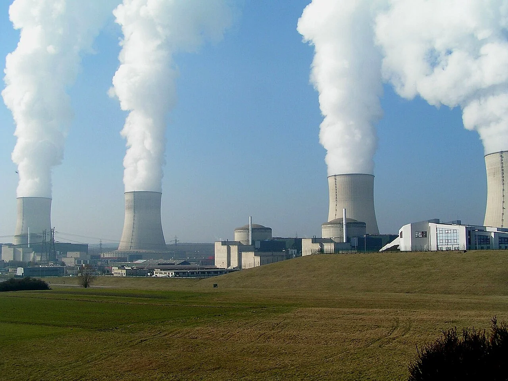
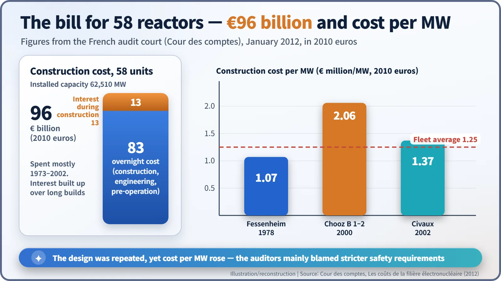
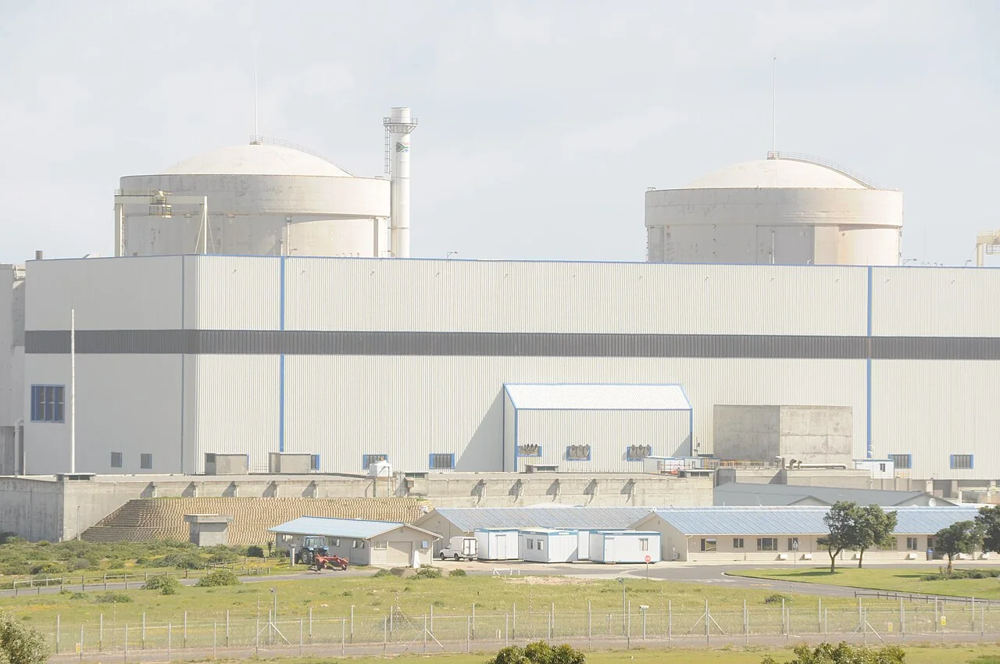
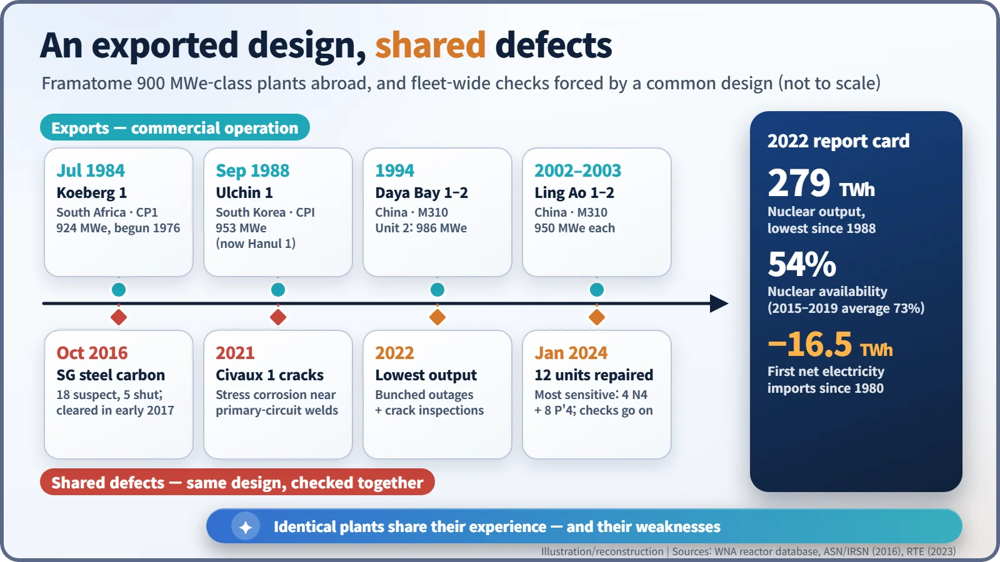

Nuclear History · 267
What Happens When You Build the Same Plant 58 Times? — The Report Card on France's Standardized Nuclear Fleet
One utility, one vendor, one design repeated 58 times: the cost, the performance, the exports and the shared defects of France's reactor fleet.
Between 1977 and 1999 France connected 58 pressurized-water reactors built to a handful of near-identical designs, ordered by one utility and supplied by one vendor. Decades later the results can be read like a report card: a €96 billion construction bill, cheap and flexible power, a design exported to three continents, and the downside of uniformity, when one flaw found in one plant meant checking many at once.
Opening the receipts
In January 2012 France's national audit court, the Cour des comptes, published a thick report. The prime minister had asked it a deceptively simple question the year before: what does nuclear electricity actually cost? A country that had spent almost thirty years building the same pressurized-water reactor design over and over was, for the first time, gathering all the receipts in one place. The auditors were careful to say that they took no position on whether France should have more or less nuclear power. They would just show the numbers. [1]
How France decided to go nuclear in 1974 is another story. This one is about the results: what the experiment of building the same plant 58 times actually delivered, and what it cost.
The bill for 58 reactors
The structure was unusually simple. One utility, Électricité de France (EDF), placed the orders; one vendor, Framatome, supplied the reactors. Between them they built 34 reactors of about 900 MWe, 20 of about 1,300 MWe and 4 of about 1,450 MWe (the N4 series): 58 units with a combined capacity of 62,510 MW. That is the count before the two Fessenheim units closed in 2020. [1] [4]

The auditors put the construction cost of the 58 reactors at €96 billion in 2010 euros. Of that, €83 billion was the "overnight" cost of building, engineering and preparing the plants for operation; the other €13 billion was interest that piled up during the years each site was under construction. [1]

The more striking figure is the cost per megawatt. Fessenheim, finished in 1978, cost €1.07 million per MW. Chooz B, completed in 2000, cost €2.06 million per MW, and Civaux in 2002 cost €1.37 million per MW. The average across the fleet was €1.25 million per MW. In other words, repeating the design did not drive the price down. The audit court's main explanation was that safety requirements kept getting stricter over time. [1]
Does practice make it more expensive?
Here the economists part company. In a 2010 paper, Arnulf Grübler of the International Institute for Applied Systems Analysis (IIASA) called the French programme arguably the most successful nuclear scale-up in any industrialized country, yet found that real construction costs had risen substantially. He described it as a case of "negative learning by doing": the idea that big, complex technologies do not necessarily get cheaper the more of them you build. [2]
Others pushed back. Using the audit court's actual cost data, the economists Lina Escobar Rangel and François Lévêque concluded in 2015 that the escalation was less steep than earlier estimates suggested, and that costs did fall when the same reactor type was built repeatedly. The debate is still open. [3]
Cheap power, and reactors that breathe
The operating record is clearer. For 2010 the audit court calculated a cost of €33.1 to €49.5 per megawatt-hour for nuclear electricity, depending on the accounting method. That year the fleet generated 407.9 TWh. [1]
French reactors also do something many others do not: they follow the load, turning output up and down with demand. According to the World Nuclear Association (WNA), an EDF reactor early in its fuel cycle can cut its power from 100% to 30% in 30 minutes. The price is a capacity factor of about 70%, low by world standards. With nuclear supplying 67% of France's electricity in 2024, the reactors have to breathe with the grid. That same year France's net electricity exports reached 89.9 TWh. [4]
Exporting the blueprint
The 900 MWe design also became an export product. It went to Koeberg 1 in South Africa (commercial operation in 1984), Ulchin 1 in South Korea (1988, now called Hanul 1), and Daya Bay 1 and 2 (1994) and Ling Ao 1 and 2 (2002–2003) in China. At Ling Ao the deal also included a transfer of know-how. [5]

Same design, same crack
But identical plants share their weaknesses too. If a cookie cutter has a nick in it, every cookie comes out with the same mark.
In 2016 the French nuclear safety authority, ASN, warned that steel in some steam-generator parts might contain too much carbon. Eighteen reactors in the 900 MWe and 1,450 MWe series were concerned, and on 18 October 2016 ASN required five of them to shut down for inspection. In early 2017 the checks concluded that the reactors could stay in service. [6]

The bigger test came in 2021, when stress corrosion cracking was found near welds in the primary circuit of Civaux 1. Because the same design ran across the fleet, reactor after reactor had to be taken offline for checks. In 2022 French nuclear output fell to 279 TWh, the lowest since 1988, and France became a net importer of electricity for the first time since 1980, by 16.5 TWh. It is worth stressing that this was not an accident releasing radioactivity: the reactors were stopped for preventive inspection and repair. Repairs to the 12 most sensitive units were finished in January 2024. [4] [7]
The last line of the report card
Standardization paid off again when it came to extending reactor lives. In February 2021 ASN set the conditions for the 32 operating 900 MWe reactors to run for another ten years beyond their 40th year, treating them as a group. Because they share one design, much of the assessment could be done once for all of them. [4]
Build fast, share experience, and suffer the same flaws together: France's 58 reactors showed, at the scale of a whole country, both faces of standardization.